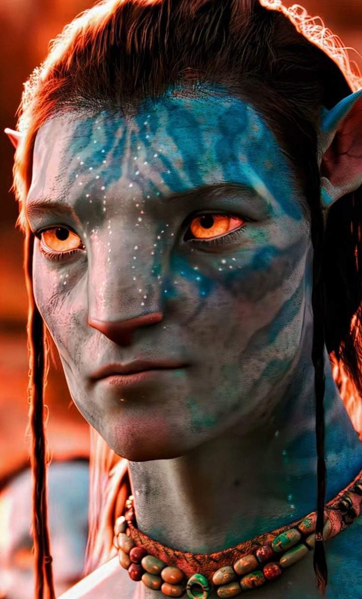
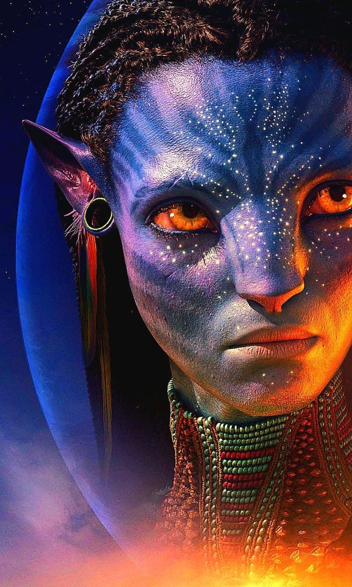
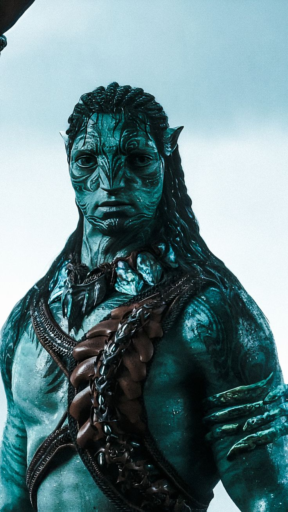
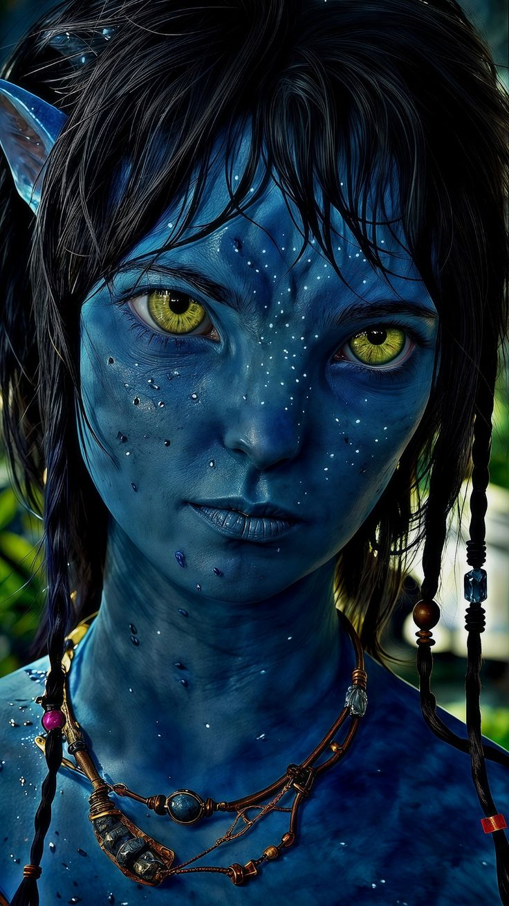

WELCOME TO THE AVATAR CHARACTERS WEBSITE AND THEIR LIFE STORIES.
Discover the stories behind the most iconic characters from the Avatar universe. Learn about their journeys, powers, and connections to Pandora’s breathtaking world. Dive in and explore the lives that make this epic story unforgettable.
Jake Sully is a former Marine who lost the use of his legs in combat on Earth. Chosen to join the Avatar Program, he travels to the moon Pandora, where his mind is linked to a genetically engineered Na’vi body. At first, Jake’s mission is to gather intelligence for the human military, but after meeting Neytiri and experiencing life among the Na’vi, he switches sides and fights to protect Pandora from human exploitation.
Neytiri is the daughter of Eytukan and Mo’at, the spiritual leaders of the Omaticaya clan on Pandora. She first meets Jake Sully when he enters the forest in his Avatar body. Although she distrusts him at first, she soon sees his courage and purity of heart. Neytiri teaches Jake the Na’vi ways, helps him understand the balance of nature, and eventually falls in love with him. Together, they lead the Na’vi in the fight to protect Pandora from human invasion.
Tsu’tey is one of the finest warriors of the Omaticaya clan and was originally promised to Neytiri before Jake Sully’s arrival. Proud and loyal to his people, Tsu’tey distrusts Jake at first, seeing him as an outsider and a threat. However, when Jake proves his loyalty to the Na’vi and fights to protect Pandora, Tsu’tey recognizes his courage.
Kiri is the adopted daughter of Jake Sully and Neytiri. She was mysteriously born from the Avatar body of Dr. Grace Augustine, after Grace’s death in the first film. Kiri has a special spiritual connection to Eywa, the life force of Pandora, and can feel and interact with nature in ways that no one else can.
